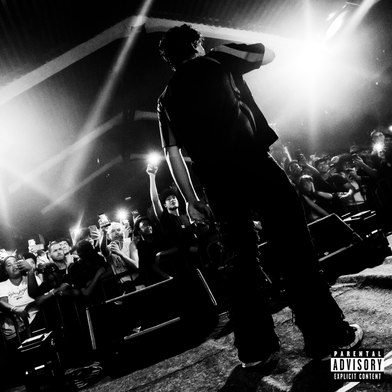

O que é o "rap de anime"?
É um estilo de música feito por fãs, em que as letras contam a história, os sentimentos e os conflitos de personagens de animes, mangás e games. Cada faixa funciona como uma homenagem: o artista mergulha no personagem e transforma a trajetória dele em versos.
No Brasil, a cena ganhou força na internet, principalmente em canais de vídeo e plataformas de música. Grupos e artistas como o 7 Minutoz e o Player Tauz estão entre as maiores referências da cena.
Por que eu gosto da cena geek
Esse tipo de conteúdo é algo que eu venho consumindo desde criança, lembro nitidamente de chegar em casa depois da aula ligar o computador que eu tinha na casa da minha avó e ouvir várias vezes a mesma musica, posso estar errado mas se eu e lembro uma das primeiras que eu ouvi foi o "Rap do Flash - O Homem Mais Rapido do Mundo" que por mais que atualmente seja bem inferior em qualidade ela ainda tem um lugar especial no meu coração.
E isso me acompanha até hoje, seja ouvindo os novos lançamentos que saem quase toda semana ou até mesmo indo em shows e aproveitando essas experiências junto de pessoas que também se sentem do mesmo jeito que eu.

O que torna a cena especial
Narrativa
As letras resumem arcos inteiros da obra, com referências que só quem acompanhou a história percebe.
Comunidade
Fãs comentam, analisam versos, sugerem personagens e participam do processo criativo.
Produção
Instrumentais, mixagem e clipes animados mostram que muita gente leva o hobby a sério.
Paixão
Mais do que fama, a cena vive do amor pelas obras e do desejo de homenageá-las.
Procure um cantor
Nenhum cantor encontrado. Tente outro nome ou estilo.
Sem ideia de quem ouvir?
Dúvidas frequentes
Preciso conhecer o anime para curtir?
Não. Muita gente descobre um anime justamente por causa do rap. Mas conhecer a obra deixa as referências muito mais divertidas.
Onde posso ouvir?
Em plataformas de vídeo e de streaming de música. Pesquise pelo nome do personagem junto com “rap”.